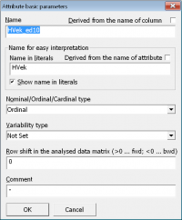

Začínáme
Systém LISp-Miner a proces DZD
Analytické procedury
Pokročilé funkce
Výzkum a vývoj
Začínáme
Systém LISp-Miner a proces DZD
Analytické procedury
Pokročilé funkce
Výzkum a vývoj
Jako první vytvoříme atribut HPohlavi založený nad stejnojmenným sloupcem. Na záložce Attributes vybereme skupinu Host a stiskneme tlačítko Add attribute.
Objeví se dialogové okno pro výběr sloupce, nad kterým má být nově přidáváný atribut založen. V seznamu sloupců vybereme sloupec HPohlavi (dvojitým kliknutím, nebo stiskem tlačítka Create attribute.
Objeví se dialogové okno pro zadání základních údajů o atributu, ve kterém nyní stačí pouze potvrdit přednastavený název atributu.
Následně se objeví dialogové okno pro automatické vytvoření kategorií. V něm ponecháme přednastavenou volbu Each value – one category, aby se vytvořily kategorie pro všechny hodnoty ve sloupci, a stikneme OK.
Konečně se zobrazila záložka s detailem atributu a v seznamu kategorií vidíme dvě – muž a žena.
Je-li v seznamu kategorií místo frekvence znak otazníku, můžeme hodnoty nechat vypočítat pomocí tlačítka Calc. freq. V opačném případě se vypočítají automaticky v okamžiku, kdy budou potřeba (např. po vyvolání interaktivní kontingenční analýzy jednoho atributu).
Zůstaneme ve skupině Host a vytvoříme hned několik atributů pro hodnoty ve sloupci HVek. Atributy se budou lišit způsobem kategorizace (diskretizace) hodnot:
Výsledkem bude skupina Host v této podobě:
Nejprve vytvoříme atribut s ekvidistantními intervaly o délce 10 let. Atribut nazveme HVek_ed10 (jeho název vychází z doporučených konvencí pro pojmenování atributů).
Přidání atributu začneme opět tlačítkem Add attribute a výběrem správného sloupce (HVek).
 V dialogovém okně pro zadání základních údajů o atributu však musíme za přednastavený název atributu doplnit informaci o způsobu kategorizace. V tomto případě dopíšeme _ed10. Všimněme si, že název atributu pro zobrazení ve výsledcích zůstává stále HVek. Přidaný prefix tak bude vidět při zadávání úloh, ale nebude mást majitele dat při prezentaci výsledků.
V dialogovém okně pro automatické vytvoření kategorií vybereme druhou volbu – Equidistant intervals. Ponecháme předpočítané rozpětí hodnot a do políčka Length zadáme hodnotu 10.
Po stisku tlačítka OK jsou atribut i jeho kategorie vytvořeny. Všimněme si, že atribut má celkem sedm kategorií vytvořené jako intervaly o délce 10. Patrně si však uvědomíme, že meze intervalů <18;27>, <28;37>… nebudou snadno interpretovatelné. Vhodnější je mít počátek intervalu na celých desítkách, resp. v tomto případě na hodnotě 5, abychom mohli s majitelem dat hovořit o hostech s věkem okolo 20 let, okolo 30 let atd.
Počátek intervalů opravíme tak, že necháme znovu automaticky kategorie vytvořit. Dialogové okno otevřeme tlačítkem Autocreate. Nezapomeneme opět vybrat Equidistant intervals a do políčka Length zadat 10. Tentokrát však ještě v políčku From změníme počáteční hodnotu z 18 na 15. Po stisku tlačítka OK se vytvoří kategorie s novými mezemi intervalů.
V tomto kroku budeme chtít sloučit dva poslední ekvidistatní intervaly <65;74> a <75;85> do jednoho s názvem „65 a více“. Jedno z hlavních pravidel při analýze radí, nikdy nic nemazat. Proto nebudeme měnit definici právě přidaného atributu HVek_ed10, ale vytvoříme atribut nový, který pojmenujeme HVek_ed10_m (opět viz konvencí pro pojmenování atributů).
Atribut HVek_ed10_m bychom mohli vytvářet úplně od začátku a následně spojit dvě poslední kategorie. Snazší je však udělat klon již hotového podobného atributu (v našem případě HVek_ed10).
Na záložce s detailem atributu použijeme tlačítko Clone a v dialogovém okně pro opravu základních údajů o atributu opravíme název nového atributu na HVek_ed10_m.
Objeví se záložka s detailem atributu HVek_ed10_m, kde pomocí funkcí pro
ruční editaci kategorie upravíme. V tomto případě chceme sloučit dvě poslední kategorie v jednu. Nejprve obě v seznamu kategorie označíme, a pak stiskneme tlačítko Join. Původní dvě kategorie ze seznamu zmizí a objeví se nová sloučená. Ta se automaticky pojmenuje <65;85). My ji však přejmenujeme na 65 a více dvojitým kliknutím na kategorii a stiskem tlačítka Edit category.
Zároveň zvážíme, zda je opravdu vhodné ponechat horní mez intervalu na 85 letech. Co kdybychom měli v budoucnu analýzu opakovat, načetli nová data a v nich byli ještě starší hosté? Proto horní mez intervalu změníme na +∞ dvojitým kliknutím na interval <75;85> a zaškrtnutím volby Infinite.
Tento atribut bude mít kategorie tvořené třemi ekvifrekvenčními intervaly. Atribut nazveme HVek_ef3 a jeho název opět vychází z doporučených konvencí pro pojmenování atributů.
Atribut můžeme vytvářet úplně od začátku, nebo udělat klon některého z předchozích dvou atributů. V dialogovém okně pro automatické vytvoření kategorií pak vybereme třetí volbu – Equifrequency intervals a do políčka Count zadáme hodnotu 3. Zároveň ponecháme přednastavenou volbu Use mnemonic names.
Po stisku tlačítka OK jsou atribut i jeho kategorie vytvořeny.
Poznámka: Jsou-li názvy kategorií anglicky a my preferujeme české pojmenování, změníme odpovídající uživatelská nastavení systému a kategorie vytvoříme znovu pomocí tlačítka Autocreate.
Kategorie tohoto atributu nebudou vytvořeny automaticky, ale ručně s prahovými hodnotami na základě doporučení experta. Atribut nazveme HVek_exp a jeho název opět vychází z doporučených konvencí pro pojmenování atributů.
Atribut vytváříme od začátku pomocí tlačítka Add attribute. Po zadání základních údajů o atributu však stiskneme v dialogovém okně pro automatické vytvoření kategorií tlačítko Cancel, abychom zabránili automatickému vytvoření kategorií.
Následně se objeví záložka s detailem atributu, ale seznam kategorií zůstal prázdný. Chceme vytvořit následující kategorie:
Kategorie můžeme přidávat postupně ručně, nebo si ulehčit práci a využít hromadného přidání kategorií. Oba postupy vedou ke stejnému výsledku a záleží na nás, který zvolíme.
Nejprve vybereme typ přidávané kategorie (v tomto případě to bude vždy interval). Protože jde o kategorii typu interval, tak se rovnou objeví dialogové okno pro zadání levé a pravé meze intervalu. Pro první kategorii nastavíme dolní mez na 18 a horní na 21. Všimněme si také správného nastavení kulatých a hranatých závorek. Po potvrzení se objeví dialogové okno pro zadání názvu kategorie, ve kterém je již název přednastavený podle zadaných mezí intervalu. V tomto případě jej však upravíme na text pod 21.
Objeví se dialogové okno s detailem intervalu, ve kterém zkontrolujeme veškerá nastavení, a dialogové okno zavřeme. Následně přidáme další kategorie a jejich intervaly.
Pokud nám ruční přidávání kategorií po jedné připadá pracné, tak můžeme využít funkci hromadného přidání kategorií.
Stiskneme tlačítko Batch add (nebo vybereme položku menu Preprocessing/Batch add of categories) a do editačního pole vypíšíme intervaly a jejich meze, jak je vidět na obrázku:
Po stisku tlačítka OK se kategorie vytvoří, ale jejich názvy budou zatím odpovídat mezím intervalů. Abychom je přejmenovali, použijeme tlačítko Batch rename a do editačního pole tentokrát vypíšeme názvy kategorií. Výslednou podobu atributu HVek_exp a jeho kategorií vidíme na další obrázku:
Související témata:
 Demo Hotel: Vytvoření atributů ve skupině Host/Bydliště
Demo Hotel: Vytvoření atributů ve skupině Host/Bydliště
 Demo Hotel: Vytvoření atributů a jejich kategorií
Demo Hotel: Vytvoření atributů a jejich kategorií
 Atribut a jeho kategorie
Atribut a jeho kategorie

{kind=link}
{kind=link}
{kind=link}
{kind=link}
{kind=link}
{kind=link}
{kind=link}
{kind=link}
{kind=link}
{kind=link}
{kind=link}
{kind=link}
{kind=link}
{kind=link}